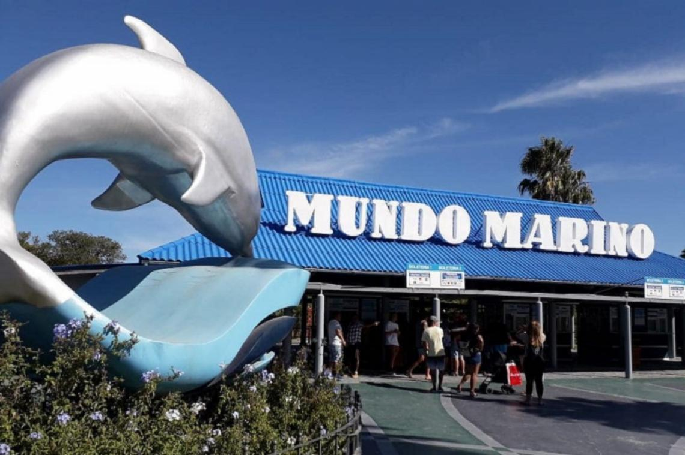
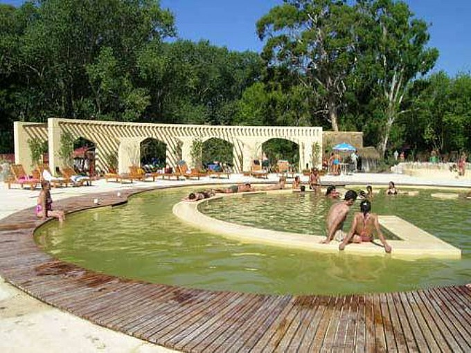
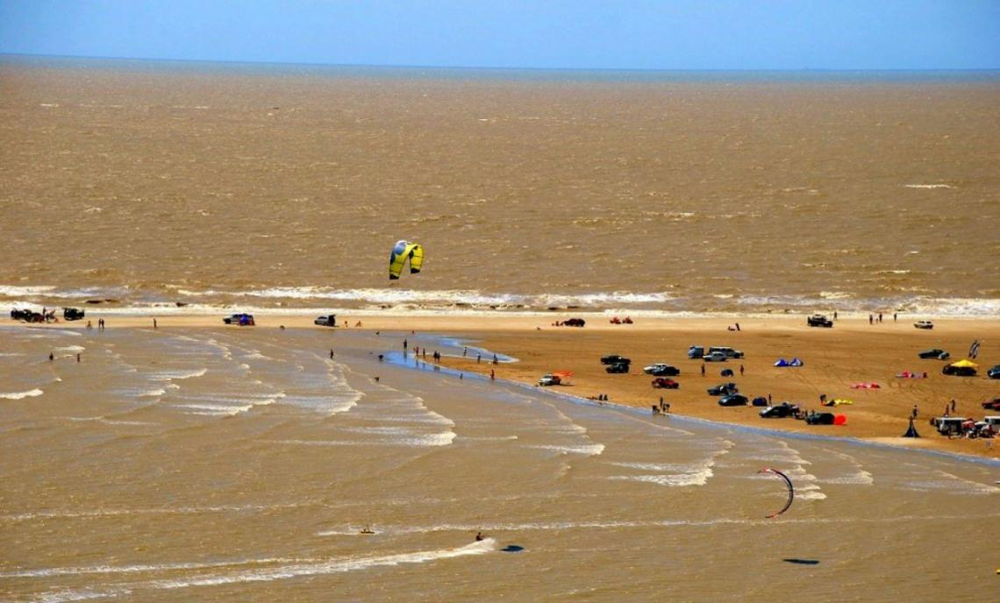
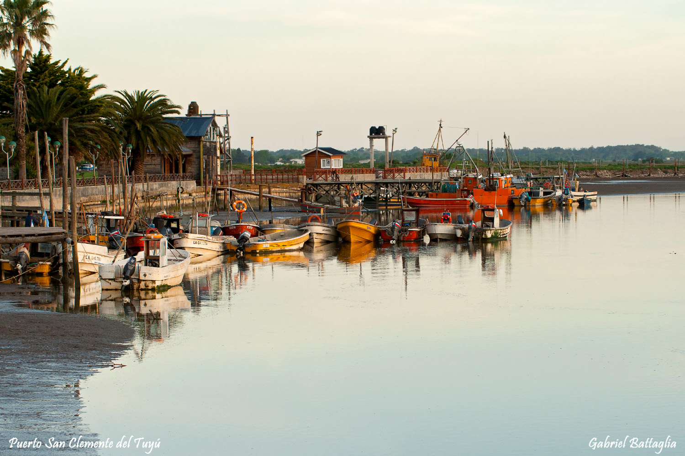
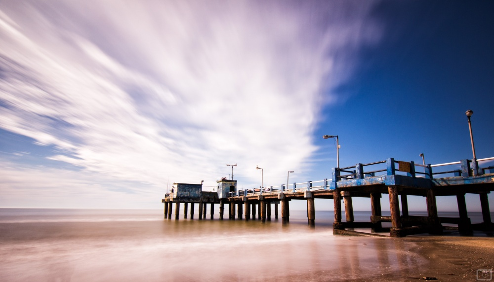

El origen de esta localidad se debió al primer loteo de la costa dedicado a balneario en el año 1935.
Quienes decidieron apostar a la zona de la costa tuvieron que sobreponerse a las características tanto climáticas como geográficas, la creación de calles, caminos auxiliares, construcción de viviendas y promover la nueva zona turística.
Gran parte de los terrenos pertenecían a Don Federico Leloir, quien los donó para instalar en primera instancia un campamento del Touring Club Argentino.

En la visita a Mundo Marino las principales atracciones están conformadas por: shows de orcas y delfines, el Estadio de los Lobos Marinos y el Anfiteatro del Lago con la presentación de una pequeña obra de teatro.
Como parte de nuestro recorrido tendremos acceso a áreas especiales, donde el factor humano es fundamental y hace posible que muchos ejemplares tengan una segunda oportunidad:

Las termas marinas se localizan dentro de un parque temático y presenta distintas opciones para los visitantes. Cuenta con distintas piletas que son utilizadas de acuerdo a las características específicas del público.
Estas aguas tienen importantes propiedades, que las hacen ideales para hidroterapias y termalismo. Son altamente calificadas por la presencia de cloruros, sulfatos, hierro,calcio, magnesio y sodio. Poseen tres veces más sales que el agua de mar, su Ph ácido las hace ideales en el tratamiento de afecciones de la piel y mucosas.

En el lugar exacto donde las aguas se mezclan, tendremos la posibilidad de visitar dos recorridos turísticos de importancia: la Reserva de Punta Rasa y el Faro San Antonio.
Se trata de una barra arenosa que se interna en el mar, presentando numerosas lagunas internas salobres.
La dimensión de esta reserva varía con las alturas de las pleamares, en algunos lugares la zona debe ser transitada con mucho cuidado porque pueden quedar los visitantes aislados al ser tapada la región por una marea de gran altura.

En el extremo norte de la Ciudad podremos conocer el Puerto de San Clemente, lugar de amarre para las embarcaciones dedicadas a la pesca en la zona. Se trata del lugar ideal para degustar exquisitos platos marítimos: pescados, rabas, calamar, etc.
En los meses de verano desde aquí parten barcos que realizan excursiones de pesca y paseos costeros... obteniendo una vista diferente de San Clemente...

Para los amantes de la pesca, el descanso y por qué no? competencias entre amigos ...
Ubicado sobre la Av. Costanera, San Clemente cuenta con su propio muelle de pesca, construido en hormigón y con un largo de 129 metros, lo cual le permite adentrarse en el mar a diferentes profundidades.